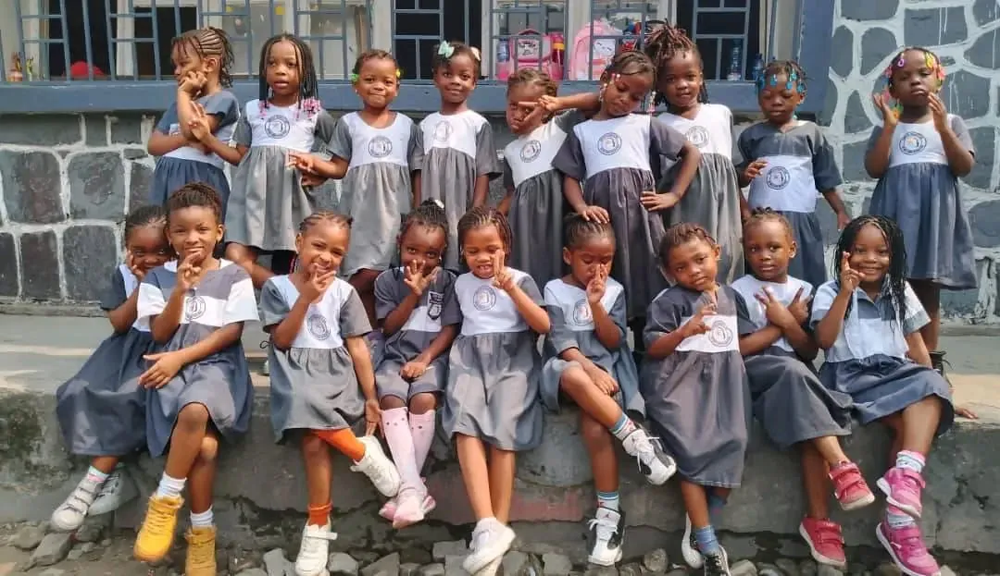
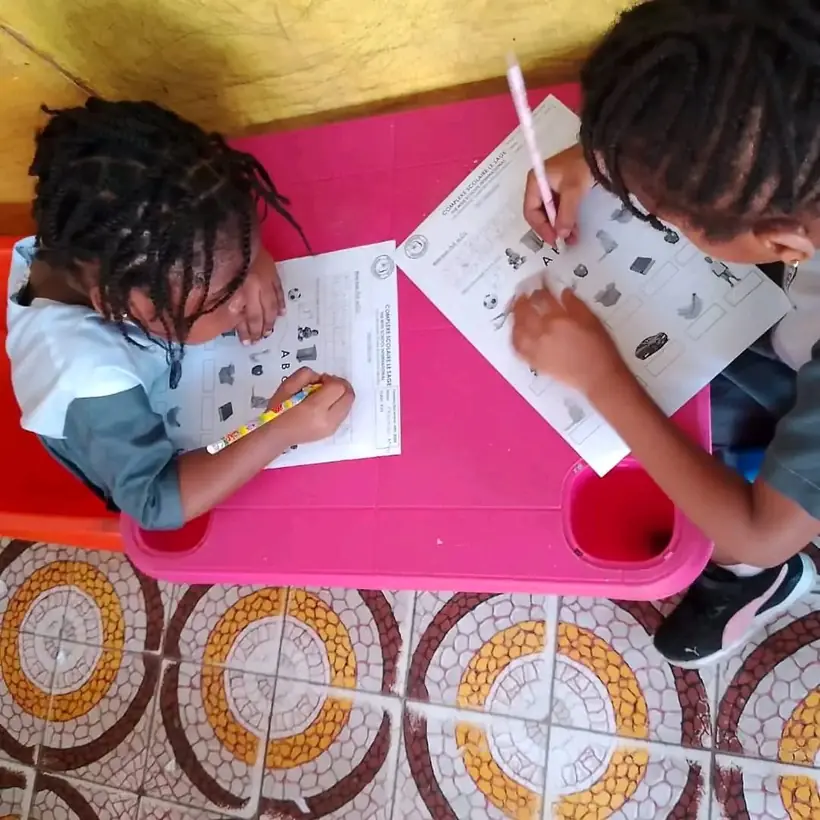
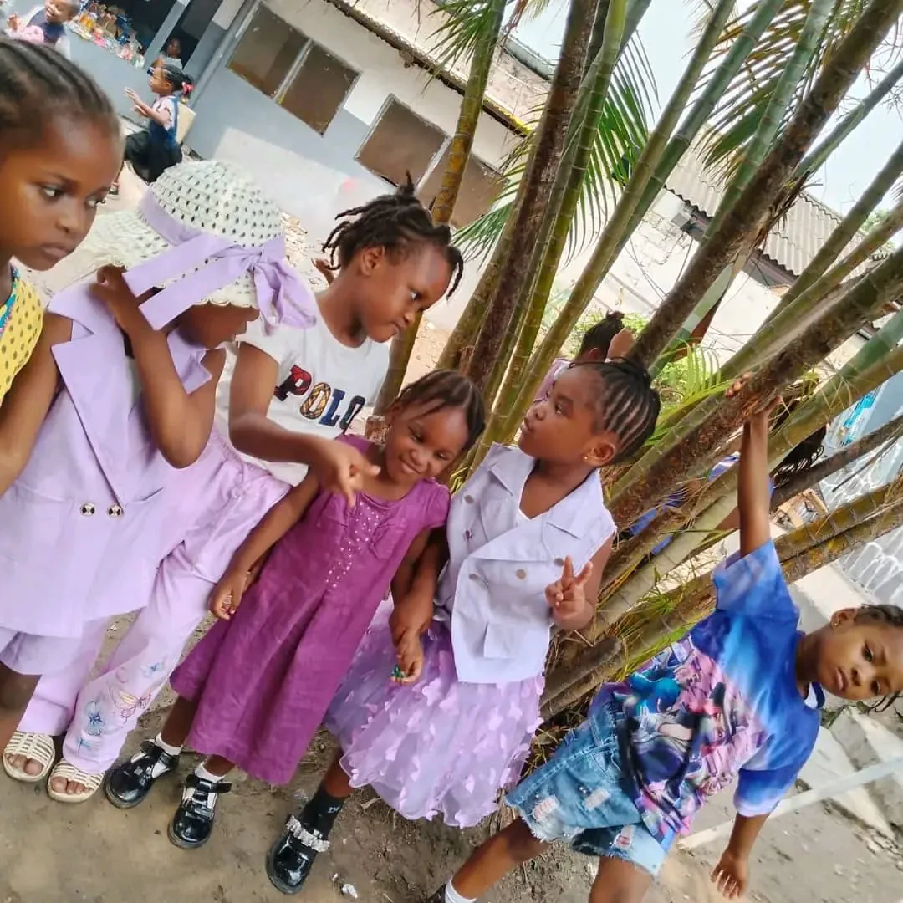
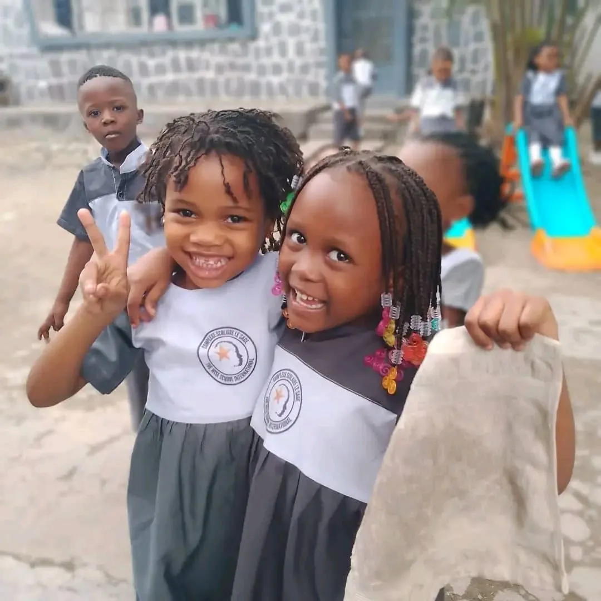
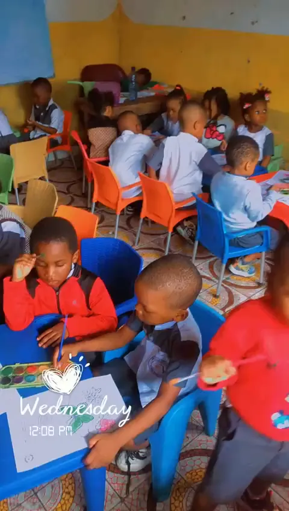
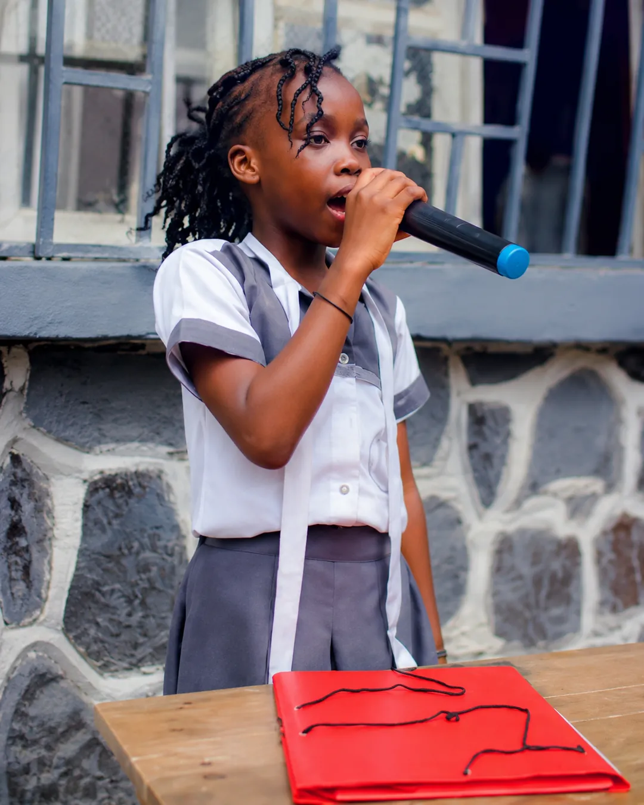
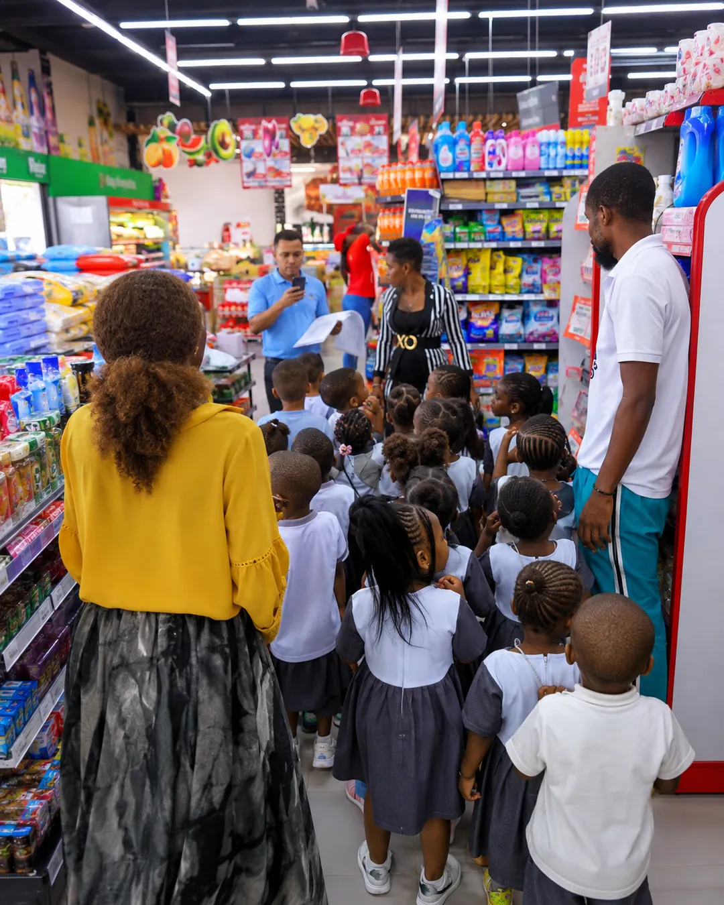
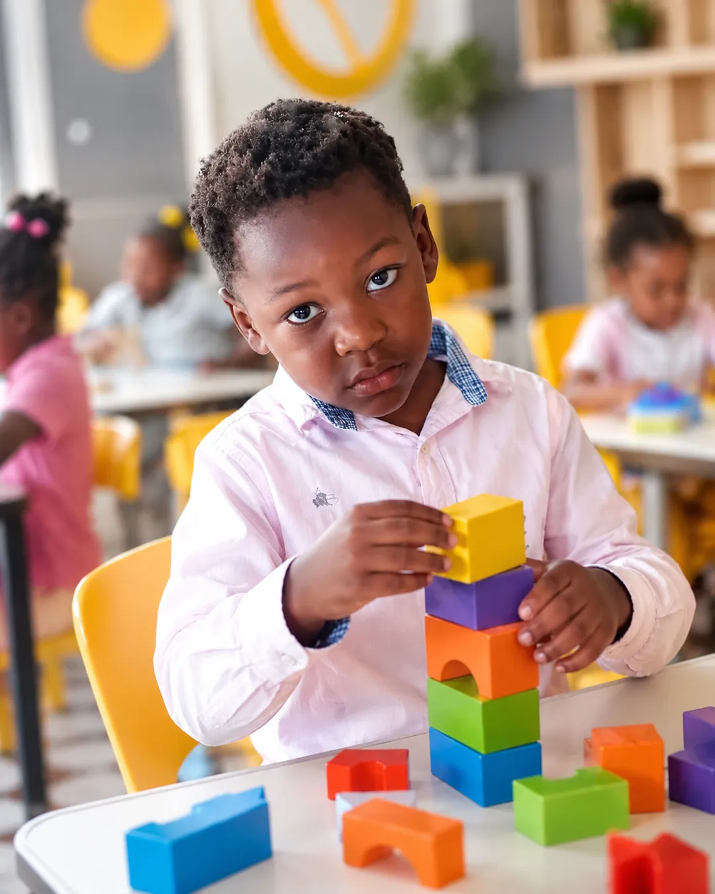

Notre école en images
Des moments vrais,
une école vivante
Activités de classe, exercices dans la cour et instants de joie. Les photos sont affichées dans leur version la plus nette disponible, avec une présentation optimisée pour le web, sans modifier les visages.










Qualité des images : les photos sont affichées à leur meilleure résolution disponible et mises en valeur par la lumière, le contraste et la présentation du site. Aucun visage n'est reconstruit, remplacé ou transformé.
Rejoignez l'école
Les inscriptions 2026-2027 sont ouvertes
Découvrez les conditions et remplissez la fiche de préinscription.